For a step-by-step guide on coding this up from scratch check out the Decision Trees course in the End-to-End Machine Learning Series.
Decision trees are one of my favorite models. They are simple, and they are powerful. In fact most high performing Kaggle entries are a combination of XGBoost, which is variant of decision tree, and some very clever feature engineering.
The concept behind decision trees is refreshingly straightforward. Imagine creating a data set by recording the time you left your house, and noting whether you arrived at work on time. Looking at it, you can see that for the most part, departure times before 8:15 result in punctuality, and departure times after 15 result in tardiness.
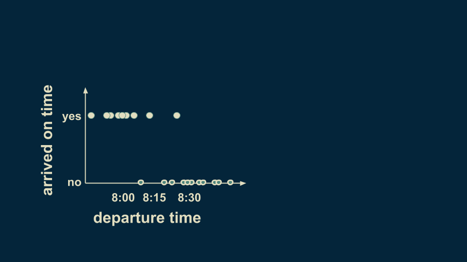You can summarize this pattern in a decision tree. The very first branching point is the question "Did departure occur before 8:15?" There are two branches, a yes and a no. For consistency we will keep our yesses on the left. Placing this decision boundary divides the data up into two groups. Although there are some stragglers and exceptions, the overall pattern is captured placing by the decision boundary at 8:15. If you depart before 8:15, you can be reasonably sure of getting to work on time. If you depart after 8:15, you can be reasonably sure of being late.
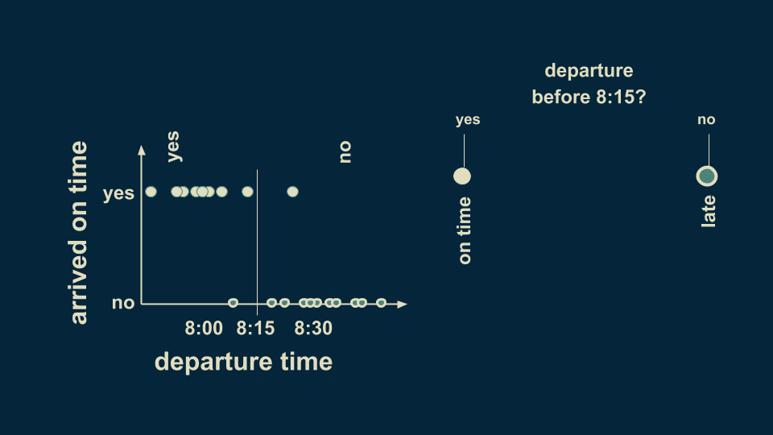This is the simplest decision tree possible, a single pair of branches.
We can refine our estimate of punctuality by subdividing both the before 8:15 and after 8:15 branches. If we add additional decision boundaries at 8:00 and 8:30, then we can divide up our arrival estimate more fully. Those before 8:00 are confidently on time, and those between 8:00 and 8:15 are probably on time, but not guaranteed to be so. Similarly, departure times after 8:15 can be subdivided into those after 8:30, which are almost certainly late, and those before 8:30, which still have a small chance of being on time.
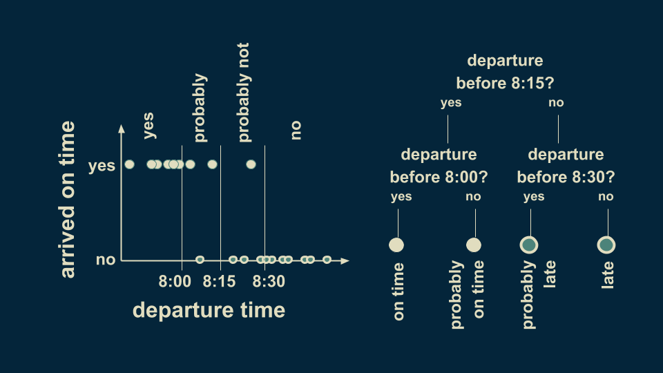This decision tree has two levels. Decision trees can have as many levels as you want. Most often, each decision point (or node) has only two branches.
This example has a single predictor variable, and a categorical target variable. The predictor variable is our departure time, and our target variable is our punctuality - whether or not we are late. Because it has only two distinct values, it is categorical. Decision trees with categorical targets are also called classification trees.
We can extend this example to the case where there are two predictor variables. Consider both the departure time and the day of the week. We'll start counting at Monday = 1 so Saturday = 6 and Sunday = 7. Inspecting the data, we can see that on Saturday and Sunday the green filled donuts extend further to the left. This means that leaving at 8:10 is probably sufficient to get you to work on time on a weekday, but probably not on the weekend.
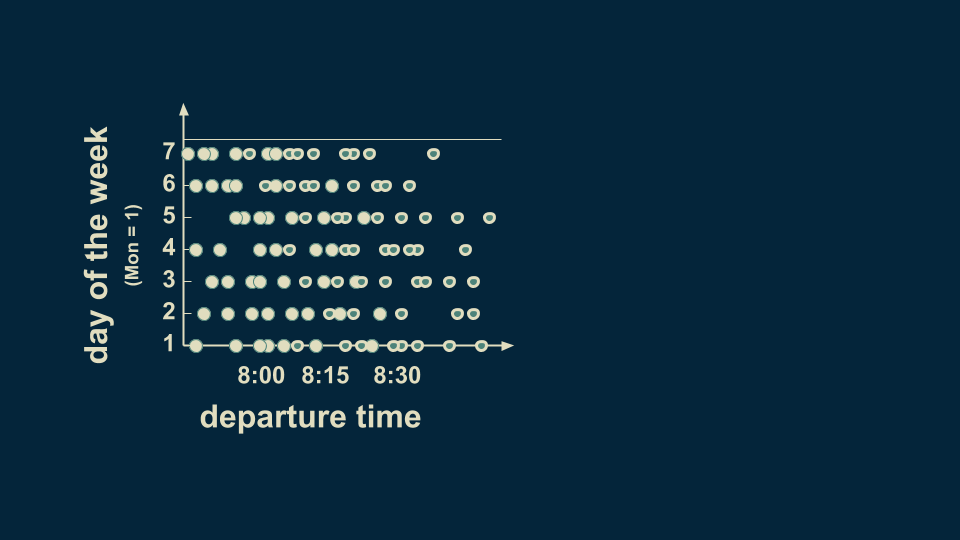To represent this in a decision tree, we can start as we did before by putting a decision boundary at 8:15. Any departure times after 8:15 are likely to be late. Departure times before 8:15 are inconsistent. Before, we assumed they would be on time, but now we can see in the data that that is not entirely true.
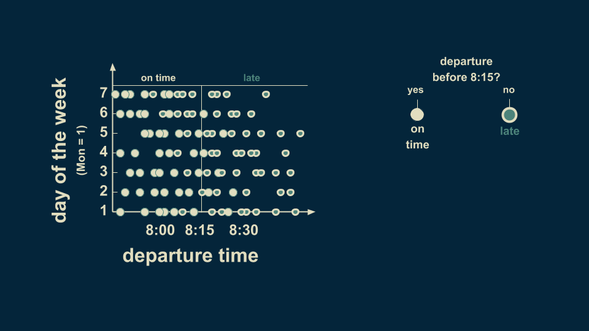To make our estimate better on weekends, we can subdivide the before 8:15 departure times into weekday and weekend. Now a weekday departure before 8:15 is confidently on time. However weekend departures before 8:15 are mostly on time, but not entirely. We have updated the decision tree with a node that reflects this new decision boundary.
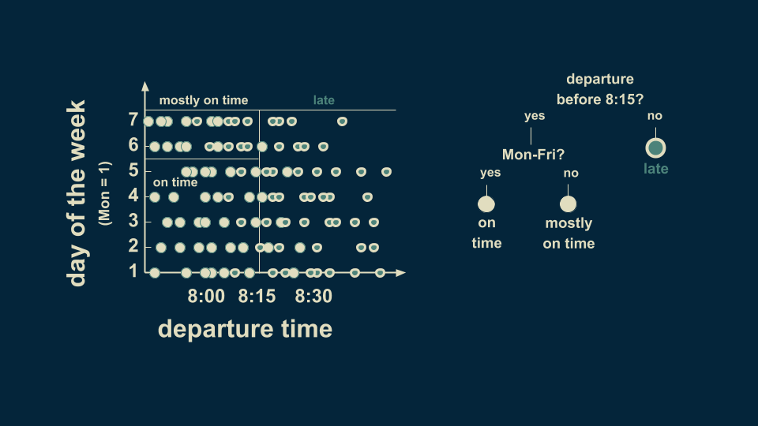Now we can further refine our estimate by subdividing our weekend pre-8:15 departure times into before and after 8:00. Before 8:00, almost all of the arrivals are on time. Between 8:00 and 8:15 the majority of them are late. Now we have our two dimensional decision tree neatly divided into four different regions. Two of them reflect on time arrivals, and two of them show late arrivals.
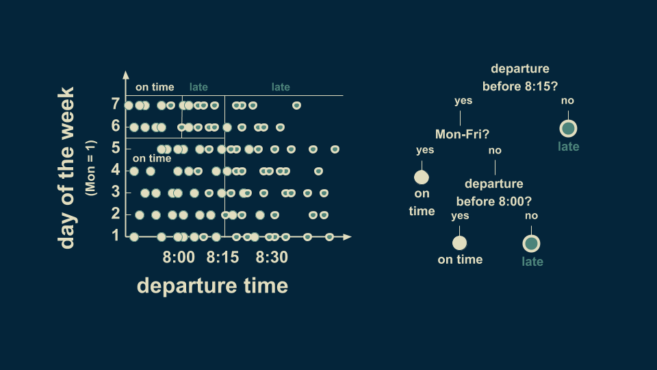This is a three level decision tree. Note that not all of the branches need to extend down the same number of levels.
Now we can look at an example with a continuous target variable, rather than a categorical one. When a model is used to make predictions about continuous numerical variables, it’s also called a regression tree. So far we have looked at one and two dimensional classification trees. Now we will look at regression trees.
Let’s consider the question of what time someone wakes up, as predicted by their age. The root of our regression tree is an estimate for the entire data set. In this case, if you had to make an estimate without knowing someone’s age, a reasonable guess would be 6:25. This is the root of the decision tree.
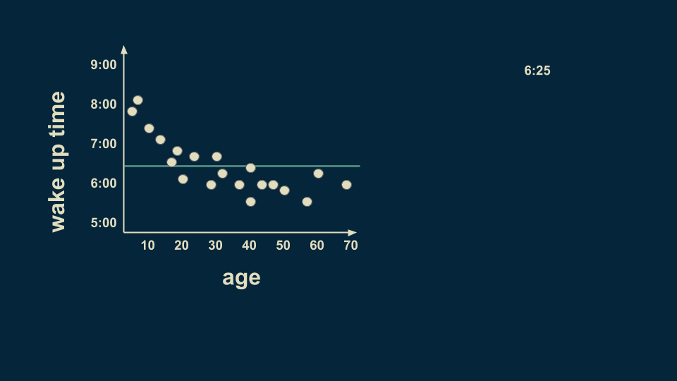A reasonable first split is at age 25. On average, people younger than 25 wake up at 7:05, and people older than 25 wake up at 6 o’clock.
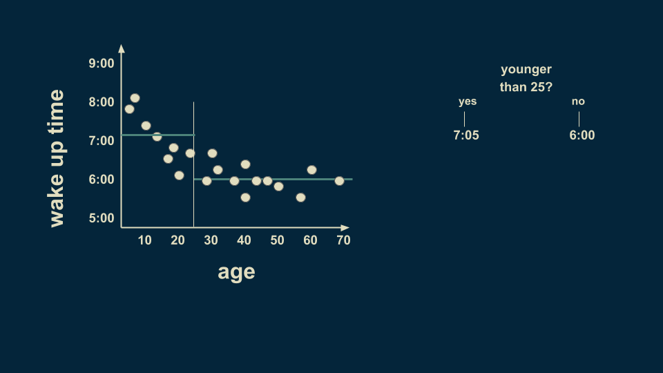There is still a lot of variation in the younger group, so we can split it again. Now the people younger than 12 can be estimated to wake up at 7:45, and people between 12 and 25 can be estimated to wake up at 6:40.
The over 25 group can be meaningfully subdivided too. Those between 25 and 40 wake up on average at 6:10 and those between 40 and 70 wake up on average at 5:50.
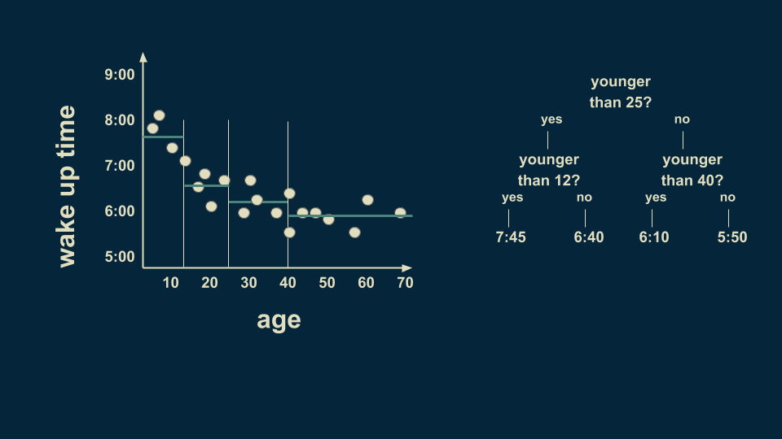There is still a lot of variation in the youngest group so we can further subdivide it. By slicing again on age 8, we can refine the estimates to more closely fit the data. We can also subdivide the 40 to 70 group on the 58 year line. Notice that we are getting to where we only have one or two data points in some of the leaves of our tree. This is a dangerous condition and can lead to overfitting, which we’ll talk more about in a minute.
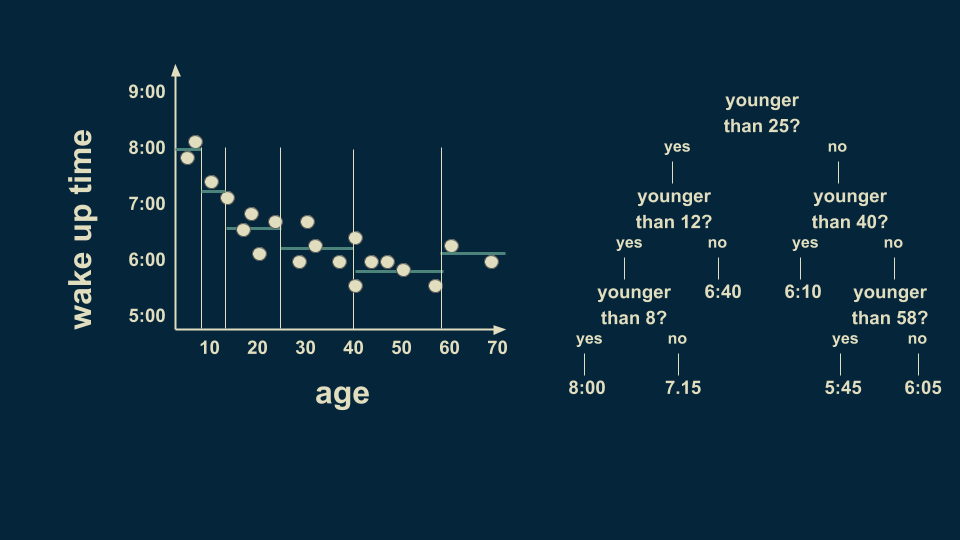The resulting tree lets us make a numerical estimate, depending on someone’s age. If I need to estimate the wake up time for a 36-year-old, I can start at the top of the tree. Are they younger than 25? No. Go to the right. Are they younger than 40? Yes. Go to the left. The estimate given by that leaf is 6:10 AM. The structure of the decision tree lets you sort people of any age into their respective bin and make an estimate about their wake up time.
We can also extend a regression tree example that has two predictor variables. If we consider not only someone’s age, but the month of the year as well, then we can find even richer patterns. In North America, days are longer in summer months, and it gets lighter earlier in the morning. In this completely unrealistic example, children and teens are unburdened by the rigorous schedules of work and school, and have their wake up time driven by when the sun comes up. On the other hand, adults fall into more regular patterns, fluctuating only slightly with the seasons. Again, older people in this example tend to wake up a little earlier.
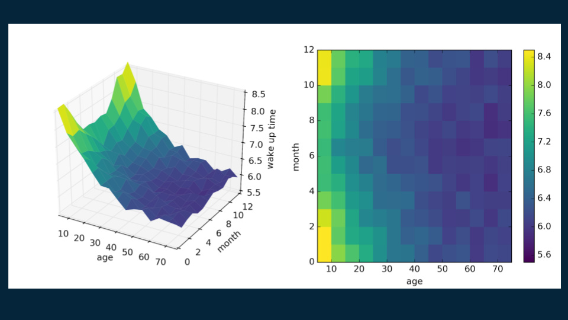We construct this decision tree much the same as the last one. We start with the root, a single estimate that roughly fits the entire data set: 6:30. ( Here's the matplotlib code for visualization.

Then, we look for a good place to put a decision boundary. We split the data on age 35, creating two halves, one for our under 35 population with a wake up time of 7:06, and one for over 35 population with a wake up time of 6:12.
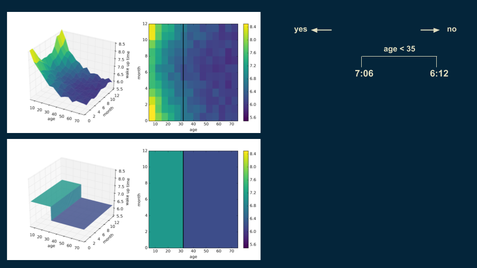We repeat the process, subdividing our younger population on whether it is before or after the middle of September and whether it is before or after the middle of March. This isolates the winter months from the summer months. Winter months have a wake up time of 7:30 for those under 35, and in the summer months it is 6:56.
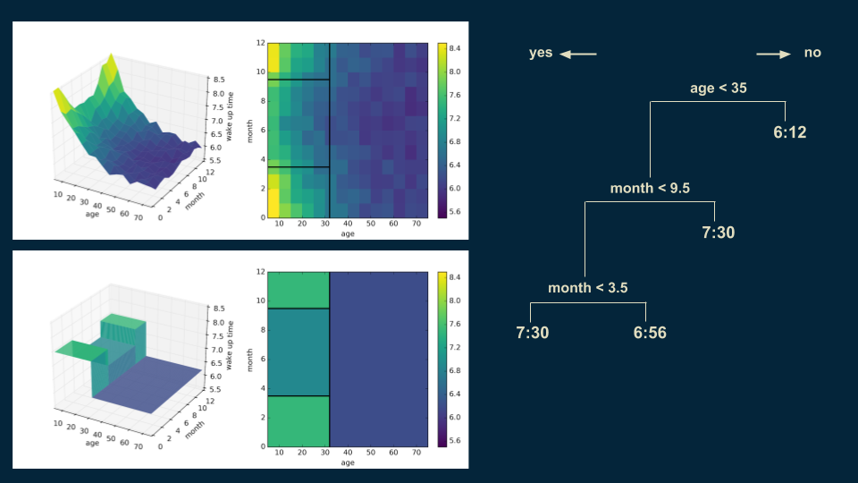Then we can revisit our over 35 population and split them again on age 48 to get a more accurate representation.
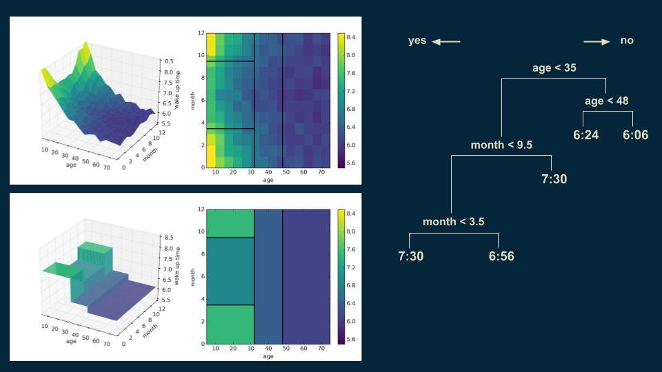We can also go back and subdivide our under 35 winter wake up times on age 18. Someone under 18 in the winter will wake up at 7:54, as opposed to 6:48 for those over 18.
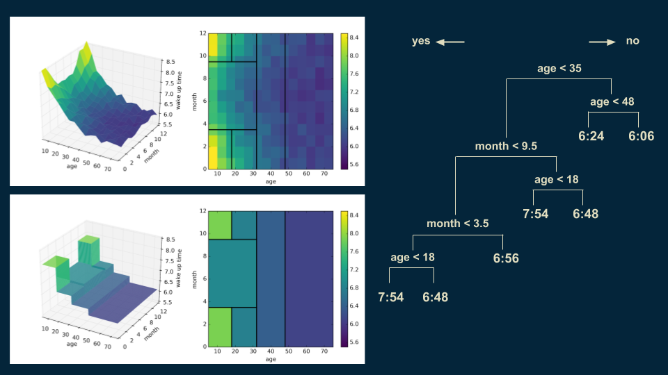You can start to see the emergence of the tall corner peaks. As we make each additional cut, the shape of our decision tree model becomes a little bit closer to that of the original data. Also, you’ll notice in the upper right hand plot that the decision boundaries begin to slice the data set into regions of approximately uniform color.
The next cut continues this trend, focusing on dividing those younger than 35 in the summer months into those older and younger than 13. The shape of the model becomes even more similar to that of the data.
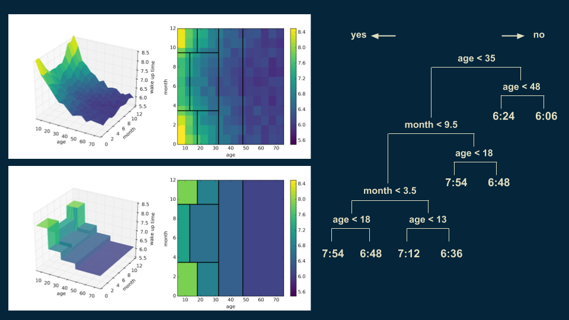You can imagine continuing this process until the model closely represents the smooth trend underlying the data. Each decision region would become progressively smaller. The approximation to the underlying function in the data would become progressively better.
The power of decision trees is not without pitfalls. An important one to watch out for is overfitting. Returning to our example of a single variable regression tree, age versus wake up time, imagine that we continued to make cuts on the age axis until there were only one or two data points in each bucket.
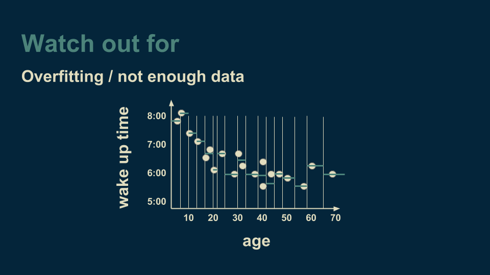When we get to this point, the decision tree explains and fits the data very well. It fits it too well. Not only does it capture the underlying trend (the smooth curve that the data follows), but it also catches the noise (the unmodeled variation) that is included in the measured data. If we were to take this model and use it to make predictions about new data, the noise from the training data would actually make our predictions less accurate. Ideally, we want a decision tree to capture the underlying trend, but not to capture the noise. One way to safeguard against this is to make sure that there are more than a handful of data points in each leaf of our decision tree. That way, any noise will be able to average itself out.
Another thing to watch for is having lots of variables. We started with a one dimensional regression tree, then included "month" data to create a two dimensional regression tree. The method doesn’t care how many dimensions we have. We could, for instance, also add latitude, the amount of exercise someone gets on a given day, their body mass index, and any other variables that we think might be relevant. To visualize this we use a trick shared by Geoffrey Hinton, renowned deep neural network researcher. He recommends "To deal with hyperplanes in a fourteen dimensional space, visualize a 3-D space and say 'fourteen' to yourself very loudly."
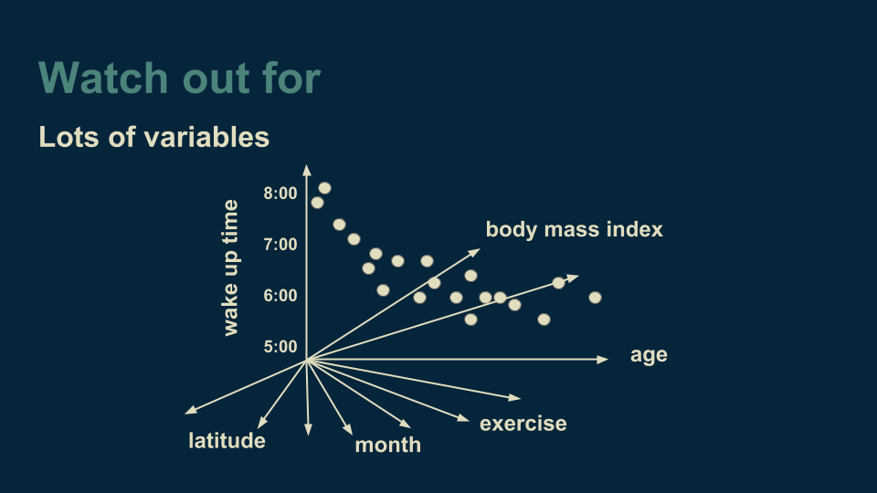The challenge when working with many variables then becomes deciding which variable to branch on when growing our decision tree. If there are very many variables, then this can require a lot of computation. Also, the more variables we add, the more data we need to reliably choose between them. It is easy to get into a position where the number of data points is comparable to the number of variables. When our data set is represented as a table, this manifest itself as the number of rows being comparable to the number of columns. There are methods for dealing with this, such as randomly selecting a variable to divide on at each branch, but it is something to keep an eye out for and handle mindfully.
As long as you keep your eyes open for places where decision trees might fail, you are free to take advantage of their strengths. Decision trees are fantastic for when you want to make as few assumptions about your data as possible. They are quite general. They can find non-linear relationships between your predictor variables and your target variable, as well as interactions between predictor variables. Quadratic, exponential, cyclical, and other relationships can all be revealed, as long as you have enough data to support all of the necessary cuts. Decision trees can also find non-smooth behaviors, sudden jumps, and peaks, that other models like linear regression or artificial neural networks can hide.
There is a good reason that decision trees consistently outperform other methods on data-rich problems.
This tutorial was written to accompany the Decision Trees course in the End-to-End Machine Learning Series. Check it out if you would like to see how to code these up from scratch and run them on real data.
Thanks for tuning in, and I hope this is helpful in building your next project.